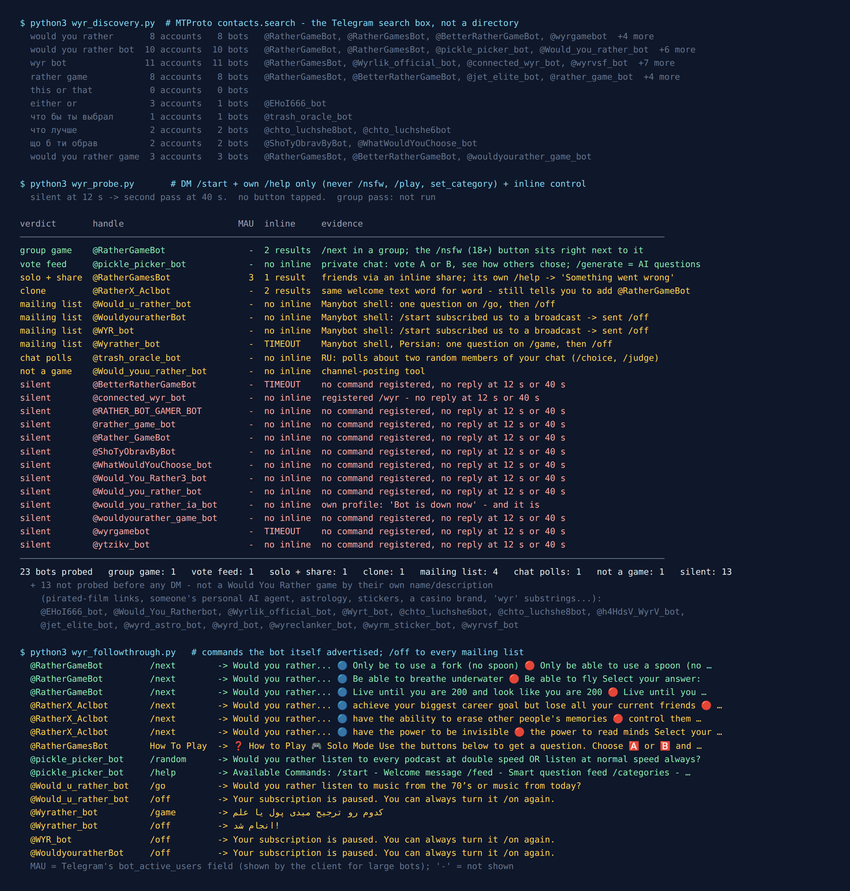

Would You Rather Bots on Telegram: 36 Found, 4 Real Games
Would You Rather is the party game that should feel most at home in a group chat. One question, two options, everybody picks. The fun is the argument afterwards, and the rules are strict about that: answering “neither” or “both” is against the rules, which, in Wikipedia’s words, “leads the players to debate their rationales”. A Telegram group is a room built for exactly that kind of debate.
So on the night of 2 October 2026 I typed “would you rather” into Telegram’s search, along with nine other phrasings in English, Russian and Ukrainian, and messaged every bot that came back looking like the game. 36 bots came back. 13 were plainly something else and I never messaged them. Of the 23 I did message, 13 said nothing at twelve seconds and again at forty. 10 answered, and only 4 of the 10 were actually a Would You Rather game. Four more were mailing lists that subscribed me to a broadcast the moment I pressed Start.
And one of the four real games, asked for an ordinary question with its ordinary command, offered “Kill yourself” as one of the two answers. That one is further down, because if you run games for a family or a school group, it is the part you need.

How the list was built
The list came from the platform, not from a directory. Telegram’s search box calls an API method named contacts.search, and it only returns accounts that exist right now. I fixed ten queries before measuring anything: would you rather, would you rather bot, would you rather game, wyr bot, rather game, this or that, either or, the Russian что бы ты выбрал and что лучше, and the Ukrainian що б ти обрав.
this or that returned no accounts at all. The two Russian что лучше (“which is better”) results were bots whose display names are unrelated search phrases, one of them a search for the calories in a honey raf coffee. Someone named bot accounts after popular searches and left them there.
13 accounts were out before I sent a single message, each on the strength of its own name or description. One is named after the 2012 horror film Would You Rather and its description is a stack of links to pirated copies in 1080p, 720p and 480p. One was someone’s personal AI assistant, judging by a command list that runs to model switching and shell access: not a game, and not mine to message. The rest were those two parked search phrases, an astrology chart, a sticker bot, a group-protection bot, a crypto casino brand, a bot called “Either Hated or Ignored” and four accounts that only matched because their usernames happen to contain the letters wyr. That left 23.
Each of those got the same treatment: /start in a private chat, the bot’s own help command if it registered one, and an inline query as a liveness check. I never sent /nsfw, /play or a category command, and never tapped a button that adds content, such as one bot’s “Add Your Question”. Anything silent at twelve seconds got a second pass at forty. Afterwards I sent each working bot the command it advertised for the next question, and sent /off to every bot that had subscribed me to something.
13 of 23 said nothing, twice
Most of the list is quiet, and some of the quiet ones say why. @would_you_rather_ia_bot still has a description inviting you to add it to a group with your friends, “more than 250 questions” included. Its short profile line, the one under the name, reads: “Bot is down now. The place from where it was running stopped running it for free :(”. I messaged it anyway. It is, as advertised, down.
That sentence is the long tail of every census on this site: the name stays in search for free, the server behind it doesn’t. Both Ukrainian results, @ShoTyObravByBot and @WhatWouldYouChoose_bot, were silent too, so a Ukrainian-speaking group has no working Would You Rather bot in its own language in this search.
@BetterRatherGameBot, whose profile line is “@RatherGameBot but better!”, is inline-only by design, and its inline query timed out, exactly as it did when I tested it for the Never Have I Ever census on 13 September.
Want a Would You Rather that is definitely switched on?
The free Party Game runs inside Telegram itself, with nothing to add to your group and nothing reading the chat. Its Would You Rather mode has 39 dilemmas in English and 39 in Ukrainian, none of them 18+, next to Never Have I Ever and Truth or Dare.
Open the Party Game No Telegram? It runs in a browser too: charliemorrison.dev/party-gameThe one built for a group: @RatherGameBot
@RatherGameBot is the only original in the census whose welcome message explains how to play in a group (the other one is a copy of it, below): add it, then send /next@RatherGameBot for a question. The @RatherGameBot suffix is not decoration. Telegram puts bots in groups into privacy mode by default, where they only see “commands explicitly meant for them (e.g., /command@this_bot)”, so the suffix is how the bot knows the command is for it.
In private, /next returned a question every time, with two coloured buttons to vote with. Three in a row: only a fork or only a spoon; breathe underwater or fly; live to 200 and look 200, or live to 80 and look 25. It also answers inline, with two results side by side: “Get Question” and “Get Question (18+)”. The 18+ sample it returned was about sex, which is what the label promises.
Two things to know before you add it, one of them from the September census and still true. First, the bot’s account has privacy mode switched off, so in a group it receives every message, not just the commands meant for it. Second, and this is new: the 18+ label separates sex from the rest. It does not separate darkness.
What the ordinary deck served
The run behind the census was the second attempt. The first one crashed after the @RatherGameBot step, before it could save its results, so its replies exist only in the console, and I copied the one that matters into the evidence file word for word. It came from /next, the family-friendly command. I never sent /nsfw:
Would you rather...
🔵 Push a button and have a random 10,000 people die
🔴 Kill yourself
Among adults this is the kind of dark hypothetical people argue about for fun. But it is in the default deck, not behind the 18+ button. In a group with teenagers in it, or with someone who is having a hard time, nobody should meet that as a random game prompt. If that describes your group, don’t run this bot blind: preview the questions yourself, or use a set you have read.
The clone: @RatherX_Aclbot
@RatherX_Aclbot is also called “Would You Rather Bot”, and its welcome message is the original’s word for word, down to “Add @RatherGameBot to your group”. Follow its instructions and you end up adding a different bot. Its questions are its own, though: lose all your friends or never reach your career goal, erase people’s memories or control them for a while, invisibility or mind reading. None of the questions I saw from the two bots overlapped. It has the same “Get Question (18+)” inline result next to the ordinary one, and its privacy mode is off as well.
Rule of thumb: a bot whose help text tells you to add a different bot is a copy.
Two for playing alone
@pickle_picker_bot, “Pickle Picker”, is the most complete product in the list, and it is built for one person scrolling. /start brought a command list (a smart feed, categories, curated collections, random, AI-generated questions, suggest your own) and then the first question with A and B buttons. /random pulled one from a category called “Holy Wars”: every podcast at double speed, or normal speed always. It has no inline mode and no group commands: a good solo time-waster, not an evening with friends.
@RatherGamesBot is the comeback. On 13 September it was silent in private and timed out inline. On 2 October it greeted me by name with four buttons (Solo Mode, Challenge Friends, How To Play, Add Your Question), and its inline query returned a card for sharing the game. Its How To Play says friends mode works by typing the bot’s name in any chat. Its own /help command, though, answered “⚠️ Something went wrong. Please retry soon.” It is the one bot in the census that shows a monthly-users number on its account: 3.
Four mailing lists that look like games
Four bots answered /start with some version of “Congratulations! You subscribed to WYR.”, followed by “Want to create your own bot? Go to @Manybot”. They are shells made with the Manybot constructor, and the welcome says plainly what pressing Start did: it subscribed me. On @WYR_bot, @WouldyouratherBot, @Would_u_rather_bot and the Persian @Wyrather_bot alike, I was now on a subscriber list, and a subscriber list is something its owner can post to later. None of the four said what they would send.
Two did serve a question: @Would_u_rather_bot (“Alastor”, your narrator for tonight) asked music from the 70s or from today, and @Wyrather_bot asked, in Persian, money or knowledge. One question each, no way to vote.
If you pressed Start on one of these, send /off. All four took it: “Your subscription is paused. You can always turn it /on again.”
The rest that answered
@trash_oracle_bot came up for the Russian что бы ты выбрал (“what would you choose”), and it is a different game wearing the name. It makes polls about members of your chat: /choice picks two random people and two options, /judge puts one person on trial with two possible sentences. That is much closer to Most Likely To than to Would You Rather. The last one, @Would_youu_rather_bot, was a channel-posting tool that told me to go to @ControllerBot.
Would You Rather in a Telegram group without any bot
Here is the thing the census made obvious: a Would You Rather question is already a Telegram poll. One question, two options, everybody picks one. Telegram has had the feature that makes it a game, not a survey, since 23 January 2020, when it added polls that “allow everyone in the group to see who voted for what”. That visibility is the whole point. An anonymous result is a statistic. A named one is “wait, Olena would rather never sleep?”, and the argument starts on its own.
How to run it:
- In the group, open the attachment menu and create a poll. Type the question as “Would you rather…” and the two options as the two answers. You have 300 characters for the question and 100 per option, which I measured, and no Would You Rather option needs more.
- Switch anonymous voting off before you send it. That is the setting that shows who picked what.
- Leave multiple answers off. The game’s own rule, no “both”, is then enforced by the poll itself.
- When the votes are in, the minority explains itself. That is the game. Then send the next poll.
The only part a poll can’t do is write the questions, and that is harder than it looks. A good dilemma has two options the group actually splits on. When everyone votes the same way, there is nothing to argue about and the round dies. Of the questions the bots served me, “fly or breathe underwater” will split a room, and “music from the 70s or music from today” mostly splits by age. The way to know is to watch the first two or three polls and swap the questions that come back unanimous.
If you would still like a bot to supply questions, there is a middle way that fixes the privacy problem above. An inline bot is called by “typing its username and a query in the text input field in any chat”, without being added to the group. Type @RatherGameBot in the message field, pick “Get Question” (not the one next to it), and the question goes into the chat as your message. The bot only receives what you typed after its name and the button taps on its own question, not the whole conversation. You still get its deck, dark corners included.
Want the questions already written?
The Telegram Party Pack has 30 Would You Rather dilemmas with both options pre-written, as copy-paste text and ready-made poll blocks for exactly the recipe above, plus 110 Truth or Dare, 45 Never Have I Ever, 30 Most Likely To, 25 Paranoia and 15 Story Chain prompts and a host guide. 255 in total, nothing that needs a bot.
Get the pack — $9.99 Or see how to run a game night in Telegram without any pack.What I could not test
No group pass. Everything here comes from private chats, inline queries, each bot’s own description and commands, and the flags on its account. The account I test from can’t create groups, and I don’t borrow strangers’ groups to test bots in. So @RatherGameBot’s group mode is described from its own instructions, not played.
A few draws is not a deck review. The dark question is a fact about the deck; how often it comes up, three or four draws per bot can’t tell you.
Silent is not dead, and answering is not alive for good. @RatherGamesBot went from silent to answering in under three weeks; the bot whose profile says “Bot is down now” went the other way at some point. The date at the top of this page matters more than the list.
If you want to play tonight
- Friends, no bot: a non-anonymous poll per question, recipe above. Nothing reads your chat and nothing can go silent mid-game.
- You want a bot to supply questions: use
@RatherGameBotinline rather than adding it to the group, and only in a group where an occasional very dark question is fine. - No prep at all: the free Party Game has a Would You Rather mode with no 18+ content. For more games, the party games list covers what holds up in a bigger group, and the Never Have I Ever census covers the game people usually play next.